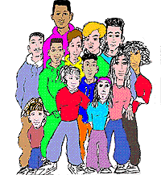

1.Introduction:
StreetSigns:A City Kid's Guide to American Sign Language was
developed in conjunction with the children of Junior High School 47,
School for the Deaf, in New York City. The children contributed
artwork, computer graphics, and their own unique take on urban life
in New York.

The Signers featured in StreetSigns are all current or former
students at the school. Elementary, Junior High School and Work Study
students all participated.